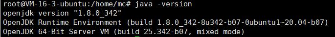
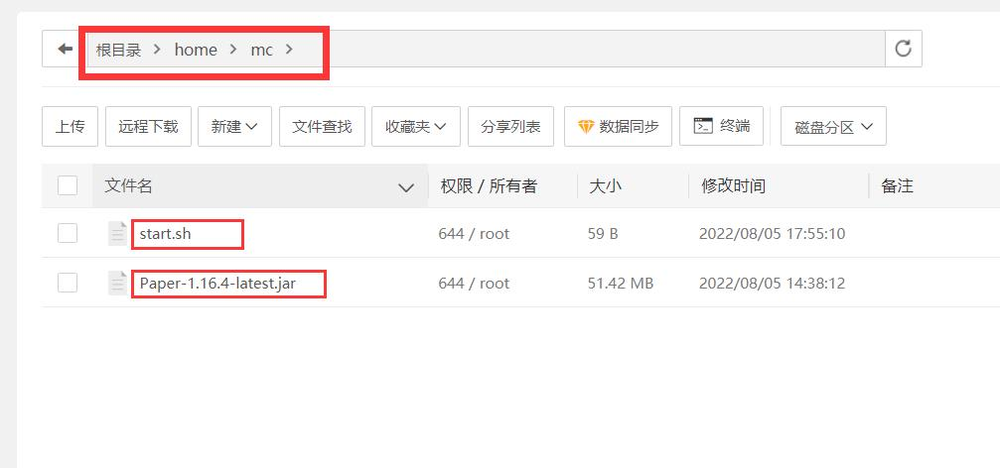
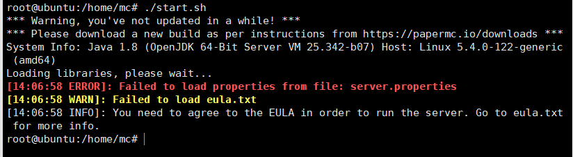
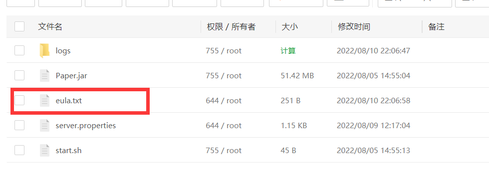

这篇文章上次修改于 375 天前，可能其部分内容已经发生变化，如有疑问可询问作者。
1.下载服务端
注意:本次安装服务器为Ubuntu 20.04 LTS，1h2g6m规格,版本为1.16.4
首先你得想好安装哪个版本-->服务端软件镜像站。
不过我建议安装跟我一样的版本,因为本篇是以此为基础的。
文件我已压缩打包至天翼网盘（有两个文件，一个是服务端，一个是start.sh,都会用到）-->Paper-1.16.4-latest.jar (访问码:yyy4)。
2.安装java
不同的游戏版本所安装的java版本也不同，1.16.5以前用java8，1.17版本就得用java17了，这也是推荐1.16.4版本的原因。
ssh登陆你的服务器，输入下面命令安装java8。sudo apt install openjdk-8-jre-headless
安装完成后查看java版本java -version
显示这样就可以了

3.运行
（建议使用宝塔面板操作，更方便）
1.在home目录下新建名为“mc”的文件夹，然后在mc文件夹里上传刚下载的服务端（文件名Paper-1.16.4-latest.jar）。
2.在mc文件夹新建start.sh文件
3.编辑start.shjava -Xms1024m -Xmx1024m -jar 此处修改成服务端名称 nogui

3.登录ssh，输入
cd /home/mcsh start.sh即可完成第一次启动。
4.启动失败
第一次启动都会启动失败，这时候目录会多出一些文件


这里回到文件夹，修改文件夹里的eula.txt文件，将最后一行flase改为true
还要修改文件夹里的server.properties文件（一行一行慢慢找，下面有全部代码）
gamemode=survival 游戏模式online-mode=false 正版验证max-players=6 最多在线人数view-distance=6 可视距离最后开启服务就好了。
server.properties文件这里我全写在这，避免一个个找，建议直接复制
#Minecraft server properties
#Tue Aug 23 14:41:16 UTC 2022
spawn-protection=0
max-tick-time=60000
query.port=25565
generator-settings=
sync-chunk-writes=true
force-gamemode=false
allow-nether=true
enforce-whitelist=false
gamemode=survival
broadcast-console-to-ops=true
enable-query=false
player-idle-timeout=0
text-filtering-config=
difficulty=easy
spawn-monsters=true
broadcast-rcon-to-ops=true
op-permission-level=4
pvp=true
entity-broadcast-range-percentage=100
snooper-enabled=true
level-type=default
hardcore=false
enable-status=true
enable-command-block=false
max-players=6
network-compression-threshold=256
resource-pack-sha1=
max-world-size=29999984
function-permission-level=2
rcon.port=25575
server-port=25565
debug=false
server-ip=
spawn-npcs=true
allow-flight=false
level-name=world
view-distance=6
resource-pack=
spawn-animals=true
white-list=false
rcon.password=
generate-structures=true
online-mode=false
max-build-height=256
level-seed=
prevent-proxy-connections=false
use-native-transport=true
enable-jmx-monitoring=false
motd=Novice survival
rate-limit=0
enable-rcon=false
5.screen的使用
大家都知道，这样的话关掉ssh软件程序就会停。这时候我们需要screen软件来保持服务端运行！！
至于如何使用screen点击这篇文章-->screen的使用
相关下载
我的世界hcml启动器(访问码:hyf3)
没有评论